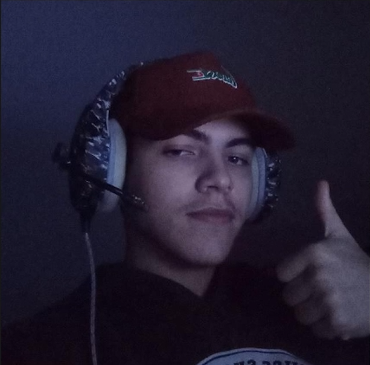

Eduardo dos Santos Toledo Lima, eu não sei exatamente quando isso começou, mas em algum momento você deixou de ser só mais uma pessoa e passou a ser alguém que faz diferença de verdade na minha vida. tem algo em você que me acalma, que me puxa pra perto, que faz tudo parecer mais leve quando você tá por perto. não é exagero dizer que você virou um dos meus pensamentos mais constantes, daqueles que aparecem sem aviso e ficam.> eu admiro quem você é, do jeito que você fala, age, até nas pequenas coisas que talvez você nem perceba. tudo em você tem um peso diferente pra mim>. e não é algo passageiro. é sincero, é forte, e eu não consigo fingir que não sinto. eu gosto de você. de verdade.

Redes Sociais do meu Amor
Com muito amor, Juninho Santos e Henriquezinho Chan